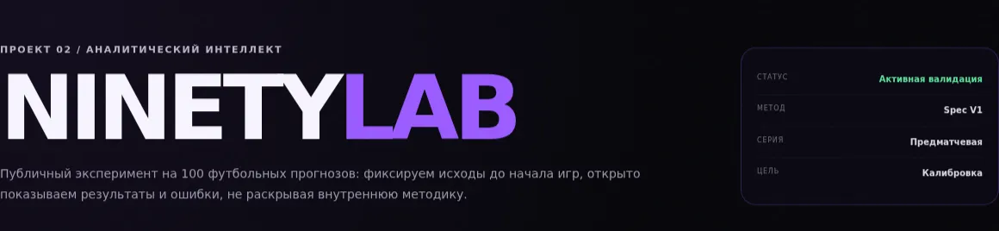
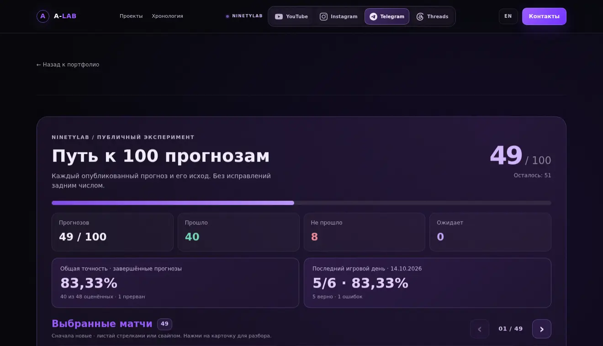

Получение данных
Информация о матчах и рынках собирается из доступных источников и проходит проверку свежести.
Собственный инженерный проект по автоматизации спортивной аналитики: сбор информации, запуск задач по расписанию, фиксация прогнозов, учёт результатов и аудит качества решений.
Ценность здесь — в архитектуре автоматизации, верификации и журналировании, а не в обещании безошибочного результата.
Информация о матчах и рынках собирается из доступных источников и проходит проверку свежести.
Планировщик организует предварительный анализ, предматчевые проверки и фиксацию итоговых прогнозов.
Матчи сверяются с зафиксированными прогнозами, результаты заносятся в историю и используются для выявления ошибок.
Структура проекта помогает воспроизводить расчёты и отличать первоначальные предположения от итоговой фиксации.
Матчи и рынки
Оценка вариантов
Версии прогнозов
Исходы и ошибки
Снимки открытой страницы NINETYLAB, а не внутренней административной панели.


Автоматизация ежедневных действий, контроль источников и объективная ретроспектива.
Периодические проверки событий и формирование данных для анализа.
Отделение предварительных версий от итоговой фиксации и сохранение исходов.
Журнал матчей, статусы, метрики и разбор расхождений между ожиданием и результатом.
Работа с API, GitHub и автоматизированными процессами для обновления данных.
Можем обсудить сбор информации, расписание задач, отчёты и внутреннюю аналитическую панель.